探索-村庄
地牢与遗迹的探索-村庄
 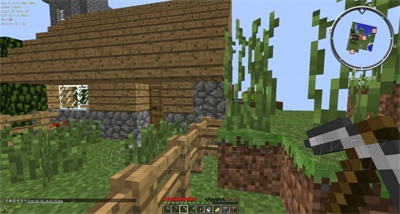 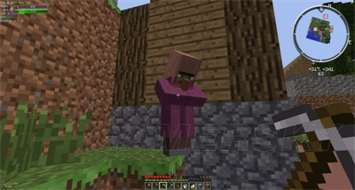 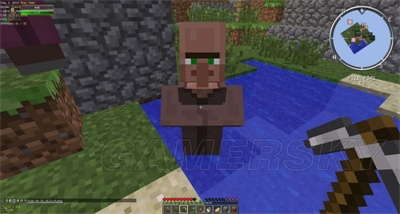 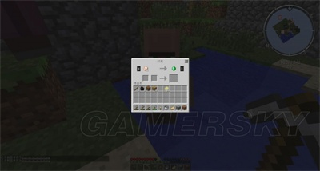
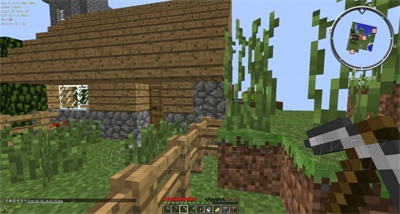 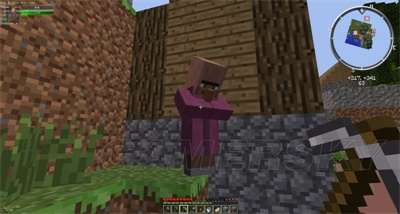 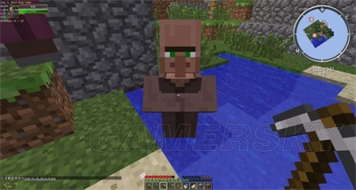 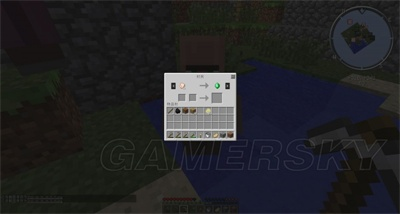
村庄，会作为建筑生成于：草原/金合欢丛林/沙漠/针叶林
一般村庄会有几个房子，若干块农田以及一些村民。村民可以与门互动，夜晚僵尸会试图攻击村民。你也可以和村民交易（如图5）当然小心“奸商”，否则你会被坑的很惨。
通过村民对一个“屋子”的识别，可以自行创建一个村庄
铁匠铺（有岩浆的那个房子）通常有一个箱子。
箱子战利品：
苹果面包铁锭金锭钻石橡树树苗黑曜石铁剑铁镐鞍铁头盔铁胸甲铁护腿铁靴子铁马铠金马铠钻石马铠
一个大型村庄通常会生成铁傀儡。因此可以做刷铁厂。
Villager：村民
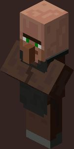
生命值：20
村民是友好的NPC，它们通常自然生成在村庄里，可以与门互动，会躲避僵尸。玩家也可以与村民进行交易
村民拥有的职业决定了它们收购什么/卖什么
农民（农民，渔夫。牧羊人，造箭师）（棕色长袍）图书管理员（白色长袍）牧师（紫色长袍）铁匠（盔甲商，武器商，工具商）（黑色围领）屠夫（皮匠，屠夫）（白色围领）
农民与小农民会收割并拾起农作物。
村民拥有8格物品栏。1.9以及1.9后村民可以装备头盔但是你并看不出来。村民会向食物少的村民分享食物，利用这一点可以做刷食物机。
如果与村民交易可能会刷出新的交易，村民会获得再生效果，恢复血量
21个有效门+10个村民的村庄会有铁傀儡
交易：小心奸商。村民以绿宝石作为货币。通常与村民进行收购交易只能得到1绿宝石
农民：
收购：小麦18-22马铃薯15-19胡萝卜15-19西瓜8-13南瓜7-12
售出：面包2-4，价格1南瓜派2-3，价格1苹果5，价格1曲奇6，价格1蛋糕1，价格1
渔夫：
收购：线15-20煤炭16-24
售出：6个熟鱼，价格1+6生鱼附魔的钓鱼竿，价格7-8
牧羊人：
收购：白色羊毛16-22
售出：颜色随机的羊毛，价格1-2剪刀，价格3-4
制箭师：
收购：线15-20
售出：8-12箭，价格1弓，价格2-3X个遂石，价格1+X沙砾（X为6-10）
图书管理员：
收购：腐肉36-40金锭8-10
售出：1-4红石，价格11-2青金石，价格1末影之眼（1.9移除），价格7-11末影珍珠（1.9加入），价格4-71-3萤石，价格1附魔之瓶（右键扔出去，生成经验球），价格3-11
铁匠：
收购：煤炭16-24铁锭7-9钻石3-4
售出：铁头盔，价格4-6铁胸甲，价格10-14附魔的钻石胸甲，价格16-19锁链头盔，价格5-7锁链胸甲，价格11-15锁链护腿，价格9-11锁链靴子，价格5-7
武器商：
收购：与铁匠相同
售出：铁斧，价格6-8附魔的铁剑，价格9-10附魔的钻石剑，价格12-15附魔的钻石斧，价格9-12
工具商：
收购：与铁匠相同
售出：附魔的铁锹，价格5-7附魔的铁镐，价格9-11附魔的钻石镐，价格12-15
屠夫：
收购：生猪排14-18生鸡肉14-18煤炭16-24
售出：5-7熟猪排，价格16-8熟鸡肉，价格1
皮匠：
收购：皮革9-12
售出：皮革裤子，价格2-4附魔的皮革外套，价格7-12鞍，价格8-10
IronGolem/VillageGolem：铁傀儡
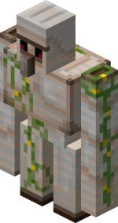
生命值：100
攻击力：7-21
攻击力：对于玩家简单4-11普通7-21困难10-31
铁傀儡破天荒的攻击力与血量导致它很难击杀，但是用一些技巧还是可以无伤击杀的。铁傀儡天然出现在21个有效门+10个村民的村庄，来保护村民。如果你攻击村民，铁傀儡就会与你变为敌对。。
铁傀儡可以用栓绳栓起来。铁傀儡有时会拿着..给村民。
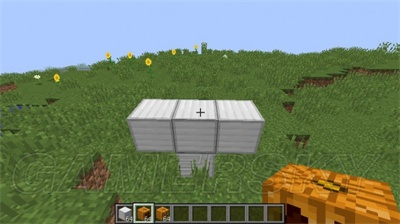
建造一个铁傀儡，铁块摆为这种形状，在第二排的第二个铁块上放置1南瓜或南瓜灯。
冷知识：
朝铁傀儡扔末影珍珠会导致铁傀儡敌对。也许因为末影珍珠是投掷物的原因？